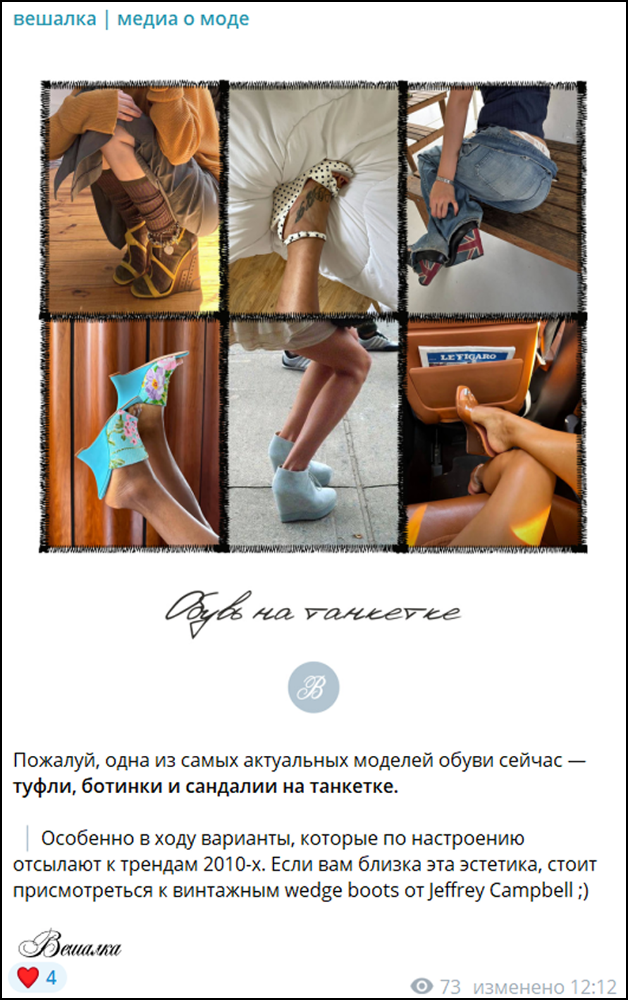

Социальные
сети
Социальные сети – основная среда существования бренда «Вешалка». Именно здесь формируется визуальный образ медиа, стиль коммуникации и ощущение сообщества вокруг проекта.
Контент должен выглядеть цельно, но при этом оставаться живым и не слишком «идеальным».
Важно сохранять баланс между эстетикой, информативностью и ощущением реального диалога с аудиторией.
Основной площадкой бренда является Telegram. Платформа используется как digital-журнал с регулярным визуальным и текстовым контентом.
Контент
Контент строится на сочетании нескольких направлений:
- новости модной индустрии;
- аналитика трендов;
- визуальные подборки;
- практические рекомендации;
- культурный контекст;
- lifestyle-контент;
- интерактивные форматы;
- более лёгкие и развлекательные публикации.
Лента не должна выглядеть слишком серьёзной или, наоборот, исключительно развлекательной.
Новостной контент также является важной частью коммуникации. При этом даже короткие новости желательно сопровождать визуальным оформлением и авторской подачей.
Оформление публикаций
Посты оформляются аккуратно и визуально единообразно. В оформлении используются фирменные шаблоны, stitched-элементы, паттерны, фирменная типографика и спокойная цветовая палитра.
Даже при использовании разных форматов важно сохранять ощущение общей визуальной системы.
В публикациях рекомендуется использовать:
- фирменные стикеры;
- stitched-рамки;
- декоративные элементы;
- фирменные эмодзи;
- шаблоны карточек;
- компактные версии логотипа.

Коммуникация строится спокойно и без излишней категоричности. Важно избегать ощущения «глянцевого эксперта», который поучает аудиторию.
Посты могут содержать наблюдения, короткие комментарии, объяснение контекста, личную интонацию, лёгкую иронию.
При этом тексты не должны выглядеть перегруженными или слишком формальными.
Не рекомендуется использовать слишком длинные текстовые полотна.
Если материал требует большого количества информации, основной текст лучше переносить в визуальные карточки или карусели. Такой формат делает контент более удобным для восприятия и помогает сохранять визуальный ритм ленты.
Текст в Telegram должен оставаться достаточно компактным и легко читаться с телефона.
Лента должна сочетать разные типы контента: фотографии, коллажи, карточки, подборки, короткие видео, текстовые публикации, интерактивные посты.
Важно чередовать более «спокойные» визуально публикации с акцентными, чтобы лента не выглядела однообразной.
При оформлении рекомендуется сохранять: достаточное количество воздуха, единые отступы, спокойную композицию, умеренное количество декоративных элементов.
Коммуникация бренда строится вокруг ощущения диалога.
Рекомендуется регулярно использовать опросы, реакции, обсуждения, рубрики, подборки от подписчиков, вопросы аудитории.
Контент должен создавать ощущение сообщества людей с похожими интересами и визуальным вкусом.